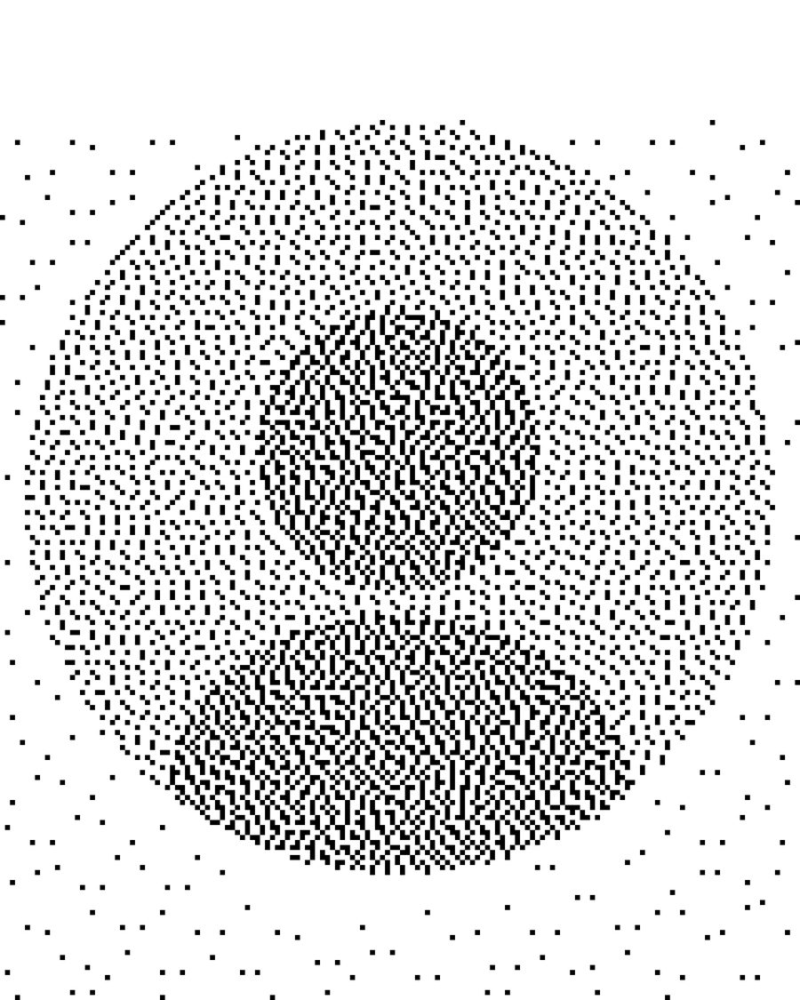

Олександр ГанцOleksandr Hants
Дніпро, УкраїнаDnipro, Ukraine
Олександр Ганц (нар. 10 квітня 1988 року) мультидисциплінарний художник та розробник відеоігор. Працюючи з різноманітними медіа, Олександр створює цифрові скульптури, відео, анімацію, музику, малюнки та відеоігри. Поєднує естетику натхненну графіті з цифровими та інтерактивними медіа. Такий підхід створює досвід, що розмиває межі між різними художніми жанрами.
Проєкти Олександра досліджують перетини цифрових медіа та міського середовища, зосереджуючись на трансформаційному потенціалі інтермедіальності. Його роботи відображають теми спонтанності, безпосередності та короткочасності, заохочуючи глядачів ставати співавторами та відкривати власні творчі імпульси.
Олександр Ганц разом з Лєрою Мальченко у 2016 році заснували мистецький дует fantastic little splash. У 2024 році Олександр почав презентувати свої персональні роботи, а його перший проєкт був показаний під час Ateliers ouverts | Les rencontres de Montmartre (Париж, Франція) в рамках Cité internationale des arts residency 2024.
Oleksandr Hants (born April 10, 1988) is a multidisciplinary artist and video game developer. Working across various media, Oleksandr creates digital sculptures, video, animation, music, drawings and video games. He integrates graffiti-inspired aesthetics with digital and interactive media. This approach blurs the boundaries between different artistic genres.
Oleksandr's projects explore the intersection of digital media and urban environments, focusing on the transformative potential of intermediality. His works reflect themes of spontaneity, rawness, and poetic ephemerality, encouraging viewers to become co-authors and discover their own creative impulses.
Oleksandr Hants co-founded the art duo fantastic little splash with Lera Malchenko in 2016. In 2024, Oleksandr began presenting his solo work, with his first project screened during Ateliers ouverts | Les rencontres de Montmartre (Paris, France) as part of the Cité internationale des arts residency 2024.